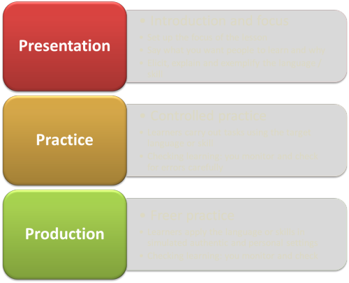
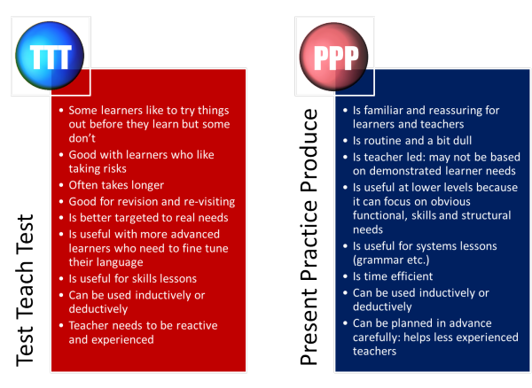

Structuring lessons: the essential guide

Lesson structure concerns the way you get from where you are now to where you want to be.
There are many possible ways to structure a lesson in English language systems or skills. Here we look at two.
As our examples, we are going to take a reading skills lesson concerned with skimming and scanning skills and a grammar (systems) lesson focused on using the present perfect tense to talk about experiences which have changed your life. We are assuming that the learners know little or nothing about either. If you don't either, it might be an idea to look at two guides (both of which will open in new tabs): the guide to the nature of reading skills and the guide to the present perfect first.
 |
The nuts and bolts |
The first things we need to decide on are the stages in the lesson
that have to be present if it is going to have any chance of success.
Think about a good lesson that you have been taught or taught and
decide what made it successful.
What were the stages in the lesson?
Think for a moment about what stages you believe
must be present in
good lessons and then click here.
- Introduction and focus
- Learners need to know where they are going (and it helps if you give the impression that you know the answer to that) and what they are going to learn.
- Presentation of the focus
- At some point in the lesson you are going to have to present the language or the skill you are targeting. This means personally (a teacher-led phase) or via the materials you use.
- Controlled practice
- In this phase, the learners will get some practice at using the language or skill but it will be fairly closely controlled so they gain confidence and can focus on the targets.
- Freer practice
- At this stage the learners will use the target language or skill in a way which is meaningful and personal to them.
- Checking learning
- At some stage(s) in the lesson there should be an opportunity for both you and the learners to see what they have learnt. This could happen briefly and frequently or be a clear and identifiable stage in itself.
You may have thought of other things you would like to include and that's fine as long as most of the things in this list are also there.
 |
Approach 1: presentation, practice, production (PPP) |
This is probably the most popular form of lesson structure and it is the one on which most course-book writers seem to base their material. Can you fill in (on paper or in your head) where the 5 must-have stages come? Click on the image when you have done the task.

A few comments
- Presentation
- This is a key stage where you explain and exemplify the language
or skills point.
For our example of teaching the present perfect, you might start with a personal anecdote about how 3 things you have done have changed your life, for example:
I have learned a language
I have had a baby
I have become a teacher
etc.
A few concept checking questions would follow that, such as:
Can I still speak French?
Did I tell you when I had my baby?
Am I still teaching?
so that the learners understand that we use this form to speak about things that have happened in the past which have changed the present.
In other words, the form refers to a past event embedded in the present.
Here you could, if the learners are up to it, explain the difference between:
I learned French at school (but have forgotten it)
and
I have learned French (and can speak it now)
Then you'd present the form and its pronunciation and concept check the meaning again to make sure everyone has it right.
This means using what is called a model sentence (or two or three) so you would write on the board or project something like:
She has become a teacher (and is a teacher today)
They have learned Italian (and can speak it now)
For the example of the skills focus, you could use examples of two real texts, one that you would skim to find what you want (a newspaper is an example) and one you would scan for data (a timetable, for instance).
Then you'd explain / elicit how you go about doing these two things.
For skimming, the usual way with a text of this sort is to look at any picture or graphic, read the first sentence of the first two paragraphs and then decide whether you want to read it all or not.
For scanning, the usual way is to have a certain time or destination in mind and then run your eyes over the text looking only for the data you need.
If you have followed the guide to how learning happens (linked below), you will be aware that there are usually two approaches to this stage: an inductive one or a deductive one (or, sometimes, both). - Practice
- At this stage you would set up a controlled task or series of
tasks.
For a grammar point, this might include a range of task types such as picking the right form to answer a question, gap-filling a sentence, expanding a skeleton sentence and so on.
For the reading skills, this stage would probably involve some timed reading tasks such as finding four dates and three numbers in a text (scanning) or a race to match headline to text (skimming).
This is the stage in any lesson where your active monitoring and help functions in two ways.
- It allows you to check that the structure / skill is being applied correctly and help where it isn't.
- It allows you to gather data for a feedback stage which is focused on what they did rather than what you hope they did.
- Production
- Here you want the learners to apply the language or the skill as authentically as is possible in the classroom.
For the grammar point, this might mean sharing experiences together about three things that they have done which changed their lives (refer back to your anecdote). You will need to give people a little time to think, of course, and may have to help by supplying some obvious topics such as learning a skill, getting a qualification, getting married, having children, moving to a different country etc.
For the skills focus, you could set a realistic task such as deciding what to watch on TV (scanning for timings and channels, skimming to see if it's interesting enough) or working in groups to pick a present for each other from a catalogue (scanning for prices and things etc.) or picking a class reader by skimming the first page or two of a book to see if they are interested in reading it together).
Here again, you are checking learning so you need to be active, alert and supportive.
Approach 2: test, teach, test (TTT) |
In this approach, you first find out what the learners can and can't do by setting them a task. Then, having identified the issues, you teach the target language or skill and then test again with a different but parallel task. Again, put together some ideas about what goes in the blank boxes before clicking on the graphic.

A few comments
- Test
- You still have to introduce the topic of the lesson, of course,
but here you refrain from explaining and simply set a task of some
sort. With the skills example, that could be a reading text
with two tasks to do, one requiring skimming, one scanning.
With the grammar structure, the opening test could be to talk about or write about life-changing events.
In either case, you need to design a feedback phase and monitor carefully so you can detect the learners current (lack of) knowledge or skill and focus them on it. - Teach
- This section looks very much like the presentation and practice stage of a PPP approach because that's what it is. See above for what goes into it.
- Test
- Now you set a parallel task to the one in the first phase and get the learners to apply what they have learned. With any luck (or good planning and teaching) the learners will be demonstrably more successful and/or accurate.
- Follow up
- In most T-T-T lessons a follow-up phase rather like the free(r) production stage of a PPP lesson is necessary to help the learners internalise and personalise the language or skill.
 |
And finally ... |
It is rarely a bad idea to reserve five minutes of the end of a lesson
to get the learners to articulate what they have learned.
You can put them in small groups to write a list of what they have
learned and then report back, get everyone to stand and tell you
something they have learned before they leave, have a mingle exercise to
see if they have learned the same things as other people or use other
methods.
This is not time wasted.
Which approach to use |
By the way of things, the PPP approach is probably better suited to an initial presentation of something new and a TTT approach to something that is being revised or revisited at a higher level but there's no reason to confine yourself that way. There are pros and cons on both sides:

| Related guides | |
| planning | the next obvious step |
| step-by-step planning | to see an example of how to plan a language lesson and a writing skills lesson |
| activity types | for a guide to the three essential forms of activities and what they do |
| task types | to see how the types of task may affect what you are planning to do |
| how learning happens | for a guide to a little psychology |